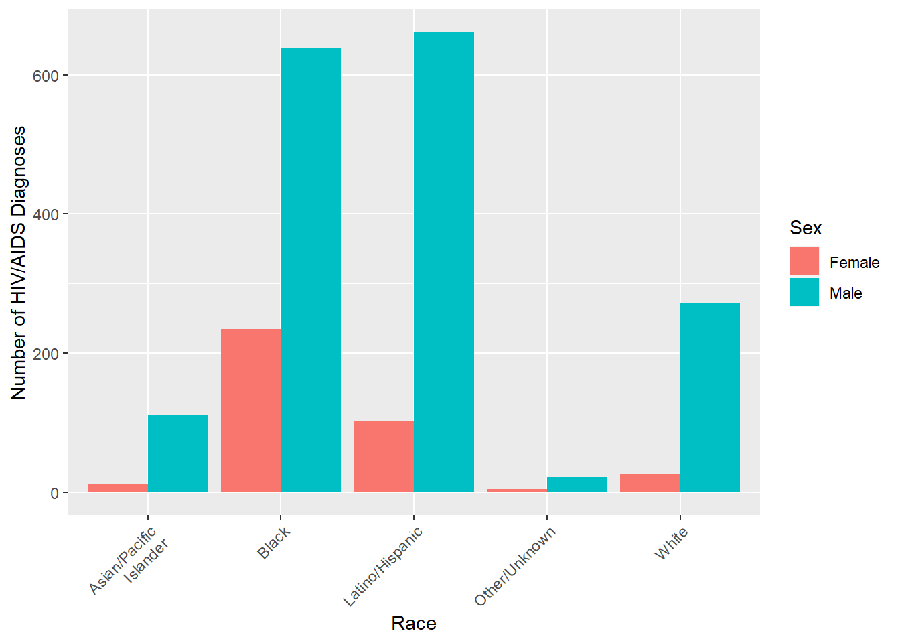

Data Visualization
Number of HIV/AIDS diagnoses by race, sex, and age group
Female <- nyc_HIV1 |>
filter(sex == "Female" & borough == "All" & race !="All")
Male <- nyc_HIV1 |>
filter(sex == "Male" & borough == "All" & race !="All")
graph1 = bind_rows(Female, Male)
nyc_HIV1$hiv_diagnoses_num <- as.integer(nyc_HIV1$hiv_diagnoses_num)
nyc_HIV2$hiv_diagnoses_num <- as.integer(nyc_HIV2$hiv_diagnoses_num)
age_summary <- nyc_HIV2 |>
filter(age != "All" & race == "All" & borough == "All") |>
group_by(age) |>
summarise(total_hiv_diagnoses = sum(hiv_diagnoses_num))
# Graph Age
ggplot(age_summary, aes(x = age, y = total_hiv_diagnoses)) +
geom_bar(stat = "identity", color = "yellow", width = 0.7) +
labs(title = "Total HIV Diagnoses by Age Group",
x = "Age Group",
y = "Total HIV Diagnoses") +
theme_minimal() +
theme(axis.text.x = element_text(angle = 45, hjust = 1))
invisible({ggplot(graph1, aes(x=race, y=hiv_diagnoses_num, fill=sex)) +
geom_bar(stat="identity", position=position_dodge()) +
theme(axis.text.x = element_text(angle = 45, hjust = 1)) +
labs(x = "Race", y = "Number of HIV/AIDS Diagnoses", fill = "Sex")})
Female <- nyc_HIV1 |>
filter(sex == "Female" & borough == "All" & race !="All")
Male <- nyc_HIV1 |>
filter(sex == "Male" & borough == "All" & race !="All")
graph1 = bind_rows(Female, Male)
ggplot(graph1, aes(x=race, y=hiv_diagnoses_num, fill=sex)) +
geom_bar(stat="identity", position=position_dodge()) +
theme(axis.text.x = element_text(angle = 45, hjust = 1)) +
labs(x = "Race", y = "Number of HIV/AIDS Diagnoses", fill = "Sex")
All <- nyc_HIV1 %>%
filter(sex == "All" & race == "All" & borough == "All")This demonstrates that both the nyc_HIV1 dataset and the nyc_HIV1 data have 11 variables, and that nyc_HIV1 is the data related to the number of patients with HIV by gender whereas nyc_HIV2 is the data related to the number of patients with HIV by age. When analyzing the number of HIV patients by race, the results show that Latino/Hispanic race are experience the highest prevalence with a high percentage of cases being male as opposed to female. Interestingly Latino/Hispanic and Black males experience HIV approximately at the same percentage where as Black females are twice as likely to have HIV/AIDs compared to Latino/Hispanic females. Latino/Hispanic continues to be of note as this racial group has the largest intraracial disparity between the sexes. Black females and black males are the intraracial group though Black males experience HIV/AIDs at three times the rate as Black females. When analyzing the number of HIV patients by age group, the results showed that 20-29 year olds had the highest number of total diagnoses, and the rest of the age groups roughly follow the population pyramid of the United States, with the one fortunate exception being that 13-19 year olds had the lowest number of diagnoses.
Distribution of the HIV/AIDS diagnoses by neighborhood
#work
# I'll see if I can find the log&lat for the neighborhoods
diagnoses <- nyc_HIV1 %>%
select(borough, hiv_diagnoses_num)
# Plot bar chart
ggplot(diagnoses, aes(x = reorder(borough, hiv_diagnoses_num), y = hiv_diagnoses_num)) +
geom_col() +
labs(x = "Neighborhood",
y = "Number of HIV Diagnoses",
title = "HIV Diagnoses by Neighborhood") +
coord_flip()The number of HIV cases varies by community, with the Staten Island community having a much smaller number of confirmed cases and the Brooklyn community having the largest number of confirmed cases, whereas Manhattan and Queens are almost identical number of cases and the Bronx slightly edging out the two. Staten Island is intuitive as it has both the smallest popuation and the most conservation population of the five boroughs. Manhattan is interesting as the largest borough as the second fewest cases. This is likely due to the socio-economic status (SES) of the population of Manhattan being significantly higher than the other boroughs, as well as a more transient population means those infected with HIV during short or medium term stays in the borough are more likely to be screened and tested in their home US state or home country, and thus count towards the HIV of whichever specific locality. Queens fits exactly where we would expect from a public health perspective with a truly diverse mix of working class individuals. Likewise with the Bronx, as a smaller borough but with higher proportion of both lower SES population and a higher concentration of Blacks suggest the borough is where it should intuitively be. Interestingly, Brooklyn has an overwhelming majority of the HIV/AIDs cases. This is mostly likely due to the confluence of two factors - first, the higher concentration of queer, LGBTQ+, and gender, sexual, romantic minorities (GSRM) that congregate in self-selecting communities, and second, due to the aforementioned populations generally having a lower SES than the more conservative Staten Island and working class Queens, with less absolute wealth and transiency of Manhattan, yet whose racial demographics still suggest a professional, commuting class of individuals meaning Brooklyn is precisely the location these populations tend to reside. It would be interesting if the data was split by both borough and race to see if this hypothesis was supported by the present data.
Trend analysis:analyze the trend of the number of HIV/AIDS diagnoses over time
#work
#work
All <- nyc_HIV1 %>%
filter(sex == "All" & race == "All" & borough == "All")
# Plot diagnoses over time
ggplot(All, aes(x = year, y = hiv_diagnoses_num)) +
geom_point() +
geom_smooth(method = "lm", se = FALSE) +
labs(
title = "HIV Diagnoses Trend (All Sex)",
x = "Year",
y = "Number of Diagnoses"
)The number of patients diagnosed in different years showed significant differences. The overall trend is decreasing from year to year, though the only truly reliable data we can suppose is from 2017 - 2019 which suggest a rather linear relationship. The dip in 2020 is most likely due to lack of HIV/AIDs test as COVID consumed the world, and especially large, urban, and diverse communities like NYC. The subsequent rebound in 2021 is likely due to two factors. First, the was a possible of “back log” of vulnerable populations who would have normally been screened for HIV/AIDs in 2020 whose immediate testing priority was switched to the immediate COVID. This means a significant portion of cases that would have been detected in 2020 and continued the rather linear relationship were instead found in 2021 when HIV/AIDs testing capacity rebounded closer to 2019 level. Second, recent studies have shown that COVID and HIV are comorbid in poor and urban settings, suggesting that as COVID spread throughout 2019, 2020, and 2021, it increased the spread of HIV within vulnerable subgroups.